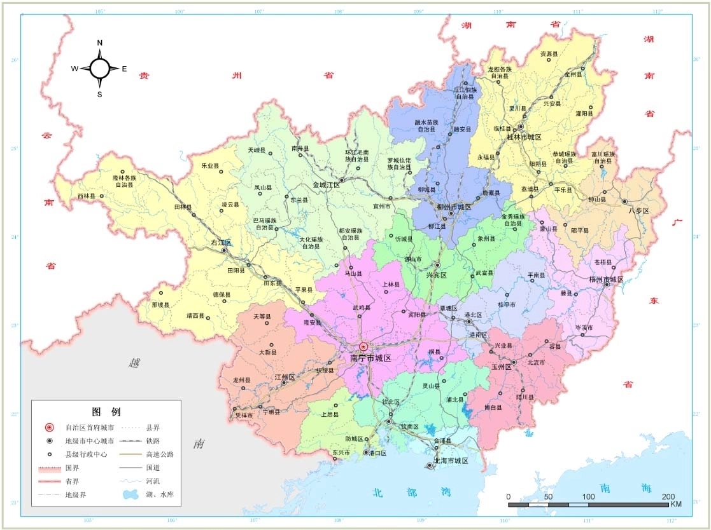
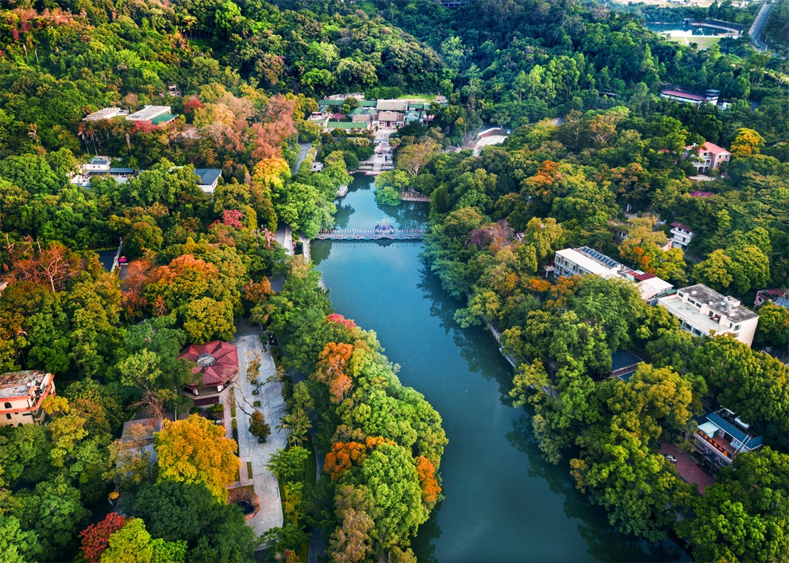
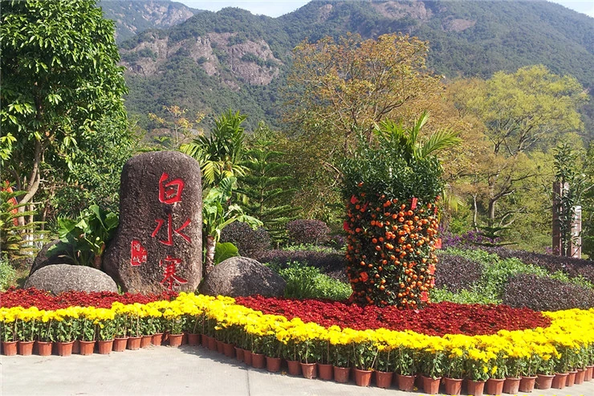

第三站：广东省
基本信息

风景名胜
广东省与南海相接，大陆海岸线长4114.3千米，位列中第一。深圳、珠海、汕头、惠州、汕尾、阳江、湛江、茂名等，都是沿海城市。除了海岸以外，广东还拥有不少特殊地貌，如花岗岩地貌、丹霞地貌和岩溶地貌等。同时，还有后天打造的人文景观，包括有6座主题公园。 [99]截至2023年，广东省共有AAAAA级景区15个，AAAA级景区277个，AAA级景区369个，AA级景区10个， [100]还有一大批红色文化和旅游博物馆、纪念馆。。有“岭南第一山”罗浮山、世界自然遗产丹霞地貌命名地丹霞山、北回归线上的绿洲肇庆鼎湖山等名山名岳，大小海岛1963个，东江、西江、北江等河岸风光和岭南水乡古村落。 [77]

人文与历史
截至2023年，广东省世界文化遗产1处、国家重点文物保护单位131处、省级文物保护单位755处、市县级文物保护单位5026处；不可移动文物2.5万多处，其中革命类不可移动文物2035处，国有可移动文物87万多件／套。 [77]截至2023年11月，广东已划定110处历史文化街区、普查认定4421处历史建筑，广东有8个国家历史文化名城、15个省级历史文化名城、24个历史文化名镇、67个历史文化名村、110处历史文化街区、4421处历史建筑。 [84]

物产
广东菜又称粤菜，是中国四大菜系之一，包括广州菜、潮州菜和东江菜，以广州菜为代表。粤菜博采众长选料广博，奇而且杂，合、海鲜是食中珍品，鸟、鼠蛇、虫皆为佳肴。选菜还讲究鲜爽滑嫩，夏秋清淡，冬春浓郁。粤菜调料独特，常见的有蚝油、汁、鱼露、珠油、糖醋、西汁等。烹调方法独特，有煲、泡、“局”等。粤菜的代表菜有：三蛇龙虎会、龙虎凤蛇羹、油包鲜虾仁、八宝鲜莲八宝盅、蚝油鲜菇、瓦掌山瑞、脆皮乳猪、肠粉等。